The mod's code, releases and bug reports are on GitHub. Links lead to Live, the channel players get by default, unless they say otherwise.
Get the mod
Latest Live release: v2.14.8a, 2026-11-13 (on GitHub).
- Installation guide: Tampermonkey or the Steam loader, step by step.
- Releases: every version's notes, and the Windows loader's installer.
Report a bug or ask for a feature
- Issues: open bugs and requests. Search them before opening a new one.
- Help & bug reports: what to send with a bug, and the Discord thread.
Source
- Live repository (Ferlieloi): the default channel, more stable.
- Dev repository (maenhiir): new features first.
- Live and Dev channels: what differs and how to switch.
Contributing
Developer documentation: how the mod and this website are built, and the rules each feature follows.
Related
- Original repository (ahvonenj): the project this mod continues.
- Synergism's source: the game itself.